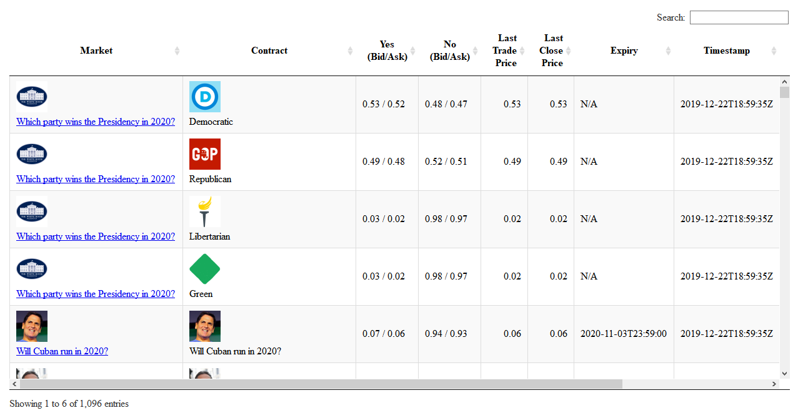
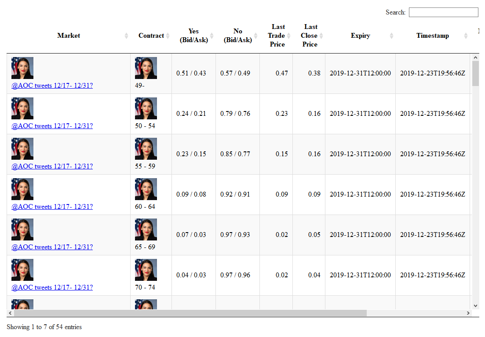

This package provides an interface to the PredictIt public API (https://www.predictit.org/api/). License to use data made available via the API is for non-commercial use and PredictIt is the sole source of such data. In addition to providing a wrapper to retrieve market data, this package includes visualization and analysis functions.
You may install the stable version from CRAN, or the development version using devtools:
# install from CRAN
install.packages('predictit')
# or the development version, via devtools
devtools::install_github('danielkovtun/predictit')To start off, try running a demo Shiny application included with the package by running:
library(predictit)
runExample('demo')Try predictit::all_markets() to return a tibble containing bid and ask data for all PredictIt markets:
library(predictit)
all_markets()
# A tibble: 1,096 x 20
id name shortName image url timeStamp status contract_id dateEnd contract_image contract_name contract_shortN… contract_status lastTradePrice bestBuyYesCost
<int> <chr> <chr> <chr> <chr> <dttm> <chr> <int> <chr> <chr> <chr> <chr> <chr> <dbl> <dbl>
1 2721 Whic… Which pa… http… http… 2019-12-23 14:53:45 Open 4390 N/A https://az620… Democratic Democratic Open 0.52 0.53
2 2721 Whic… Which pa… http… http… 2019-12-23 14:53:45 Open 4389 N/A https://az620… Republican Republican Open 0.49 0.49
3 2721 Whic… Which pa… http… http… 2019-12-23 14:53:45 Open 4388 N/A https://az620… Libertarian Libertarian Open 0.02 0.03
4 2721 Whic… Which pa… http… http… 2019-12-23 14:53:45 Open 4391 N/A https://az620… Green Green Open 0.02 0.03
5 2747 Will… Will Cub… http… http… 2019-12-23 14:53:45 Open 4495 2020-1… https://az620… Will Mark Cu… Will Cuban run … Open 0.05 0.07
6 2875 Will… Will Cuo… http… http… 2019-12-23 14:53:45 Open 5121 2020-1… https://az620… Will Andrew … Will Cuomo run … Open 0.06 0.09
7 2901 Will… Woman pr… http… http… 2019-12-23 14:53:45 Open 5215 N/A https://az620… Will a woman… Woman president… Open 0.12 0.12
8 2902 Will… Will the… http… http… 2019-12-23 14:53:45 Open 5216 N/A https://az620… Will the 202… Will the 2020 D… Open 0.22 0.23
9 2903 Will… Will the… http… http… 2019-12-23 14:53:45 Open 5217 N/A https://az620… Will the 202… Will the 2020 G… Open 0.04 0.05
10 2992 Will… Will Zuc… http… http… 2019-12-23 14:53:45 Open 5534 2020-1… https://az620… Will Faceboo… Will Zuckerberg… Open 0.03 0.04
# … with 1,086 more rows, and 5 more variables: bestBuyNoCost <dbl>, bestSellYesCost <dbl>, bestSellNoCost <dbl>, lastClosePrice <dbl>, displayOrder <int>Alternatively, to return an interactive htmlwidget (DT::datatable) table containing HTML formatted market data, pass the returned bid/ask data to predictit::markets_table():
data <- predictit::all_markets()
predictit::markets_table(data)
To plot historical prices, download a csv file for a specific contract from PredictIt’s website and pass the file path to predictit::parse_historical_ohlcv(). Then, pass in the returned contract data object to predictit::historical_plot():
filename <- "What_will_be_the_balance_of_power_in_Congress_after_the_2020_election.csv"
csv_path <- system.file("extdata", filename, package = "predictit")
contract_data <- predictit::parse_historical_ohlcv(csv_path)
predictit::historical_plot(contract_data)If you are only interested in “Tweet count” markets, use predictit::tweet_markets() to return all available “Tweet” markets:
data <- predictit::tweet_markets()
predictit::markets_table(data)
To return data for a specific market, use predictit::single_market(id), where id refers to the numerical code pertaining to the market of interest. You can find a market’s numerical code by consulting its URL or by first calling the all markets API (all_markets())
markets <- predictit::all_markets()
id <- markets$id[1]
predictit::single_market(id)
# A tibble: 4 x 20
id name shortName image url timeStamp status contract_id dateEnd contract_image contract_name contract_shortN… contract_status lastTradePrice bestBuyYesCost
<int> <chr> <chr> <chr> <chr> <dttm> <chr> <int> <chr> <chr> <chr> <chr> <chr> <dbl> <dbl>
1 2721 Whic… Which pa… http… http… 2019-12-23 14:51:03 Open 4390 N/A https://az620… Democratic Democratic Open 0.52 0.53
2 2721 Whic… Which pa… http… http… 2019-12-23 14:51:03 Open 4389 N/A https://az620… Republican Republican Open 0.49 0.49
3 2721 Whic… Which pa… http… http… 2019-12-23 14:51:03 Open 4388 N/A https://az620… Libertarian Libertarian Open 0.02 0.03
4 2721 Whic… Which pa… http… http… 2019-12-23 14:51:03 Open 4391 N/A https://az620… Green Green Open 0.02 0.03
# … with 5 more variables: bestBuyNoCost <dbl>, bestSellYesCost <dbl>, bestSellNoCost <dbl>, lastClosePrice <dbl>, displayOrder <int>See the full documentation at https://danielkovtun.github.io/predictit.